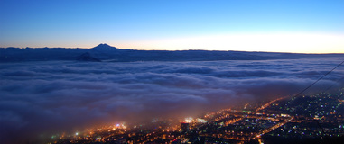

Телефон бесплатной
горячей линии для инвесторов
горячей линии для инвесторов
+7 (800) 100 80 26
Пн-Пт: 9:00-18:00, Перерыв: 13:00-14:00 ТУРИЗМ И КУРОРТЫ
ТУРИЗМ И КУРОРТЫ
КУРОРТЫ КРАЯ


Пятигорск – город, старейший бальнеологический и грязевой курорт федерального (всероссийского) значения, а также промышленный, торговый, научный, к...
Кисловодск находится на юге Ставропольского края, практически на границе с Карачаево-Черкессией и Кабардино-Балкарией, в 65 км от горы Эльбрус. Го...
Железноводск - самый маленький и уютный город Кавминвод. Он расположен между горами Бештау и Железная в Железноводской долине, поросшей густым шир...